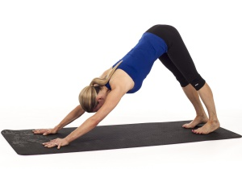

DOWNWARD DOG
Downward Dog is used in most yoga practices and it stretches and strengthens the entire body. I always say, “a down dog a day keeps the doctor away.”
How to do it: Come on to all fours with your wrists under your shoulders and knees under your hips. Tuck under your toes and lift your hips up off the floor as you draw them up at back towards your heels.
Keep your knees slightly bent if your hamstrings are tight, otherwise try and straighten out your legs while keeping your hips back. Walk your hands forward to give yourself more length if you need to.
Press firmly through your palms and rotate the inner elbows towards each other. Hollow out the abdominals and keep engaging your legs to keep the torso moving back towards the thighs. Hold for 5-8 breaths before dropping back to hands and knees to rest.
